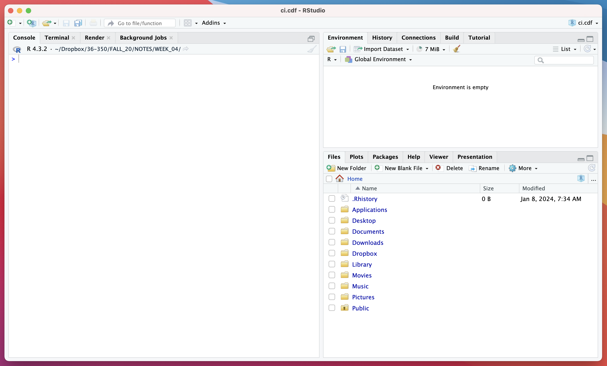

1 Getting Started
1.1 Installing R and RStudio
These instructions are current as of April 2024.
To download R and RStudio, first go to
this web site.
- To the left is a button that says “Download and Install R”. Click on that, then go to the top box and select the appropriate download link (for macOS or Windows). If Windows, then click on “base” and then on “Download R-4.3.3 for Windows”. (Download and follow the instructions to install
R.) If Mac, click on the appropriate package name, depending on whether you have an Apple Silicon- or Intel-based Mac. (Download and follow the instructions.) - To the right is a button that says “Download RStudio Desktop…” Assuming your
Rinstallation was successful, click on this to download and installRStudio. (As before, follow the instructions…installation should be seamless.)
1.2 The RStudio Layout
When you first open RStudio, it should look something like this:

At first, the most important elements of RStudio to be aware of are
- the
Consolepane (shown at left here); and - the
Files,Packages, andHelppanes (shown at lower right)
The Console pane is where you will type commands (starting in the next
section, What is R?)
The Files pane shows where you are within your computer’s file system. You can click directly on the folders within this pane to move downwards within your file system, or, if you need to go to a folder not directly under Home, you can click on the three dots “…” (to the right of Home) and that will open your system’s folder navigator…click through to the folder you want, and select “Open” (or the equivalent).
It is imperative that you know where, e.g., the files you want to load into RStudio are located once you download them, and that you know how to move to the folder in which the files are located!
Once you are in the folder you want to work in, you should click on More (next to the gear icon) and click on Set as Working Directory.
The Packages pane contains a button labeled Install: click on this button when and if you need to install a package that is not currently in your local installation of R.
The Help pane contains a search field to upper right…type in a function name (e.g., mean) and the documentation will appear. Alternatively, you can type, e.g., ?mean in the Console pane.
All good? You are ready to get started with R!
1.3 What is R?
NOTE: throughout this “book”, code output is not shown. It is assumed that you will type all the code into the Console in RStudio, both to actively engage with the material and to actually see the output.
We start this class as any class of this type should be started. Assuming you’ve fired up RStudio and you’ve meandered your way to the console, go to the prompt and type the following:
print("Hello, World!")So, to get to the first question you may have: why is there a “[1]” in the output? It denotes that on this line of output, the first displayed value is the first output value overall. Compare this to the output you get when you sample 50 values from a standard normal distribution:
rnorm(50)From the R FAQ:
“2.1 What is R?
R is a system for statistical computation and graphics. It consists of a language plus a run-time environment with graphics, a debugger, access to certain system functions, and the ability to run programs stored in script files.
The design of R has been heavily influenced by two existing languages: Becker, Chambers & Wilks’ S (see What is S?) and Sussman’s Scheme. Whereas the resulting language is very similar in appearance to S, the underlying implementation and semantics are derived from Scheme…
The core of R is an interpreted computer language which allows branching and looping as well as modular programming using functions. Most of the user-visible functions in R are written in R. It is possible for the user to interface to procedures written in the C, C++, or FORTRAN languages for efficiency. The R distribution contains functionality for a large number of statistical procedures. Among these are: linear and generalized linear models, nonlinear regression models, time series analysis, classical parametric and nonparametric tests, clustering and smoothing. There is also a large set of functions which provide a flexible graphical environment for creating various kinds of data presentations…”
R has a home page. It is free software distributed under a GNU-style copyleft, and an official part of the GNU project (“GNU S”).
A key phrase above is “[t]he core of R is an interpreted computer language.” This means that instructions are executed directly when typed into the console of RStudio. For instance:
666R doesn’t know necessarily what to do with this input of type “double,” so it outputs it to the screen. (If you input something of unknown type, like an uninitialized variable, you’d get an error instead.)
You have to help R along, by, e.g., explicitly telling it you want to assign the value 666 to a variable:
x <- 666
x
typeof(x)There are other ways to output the value of the variable x, such as
print(x)
cat("x =",x,"\n")As you can see (and will see again later), the latter is more flexible than the former.
Standard mathematical operations include
| Operation | Name |
|---|---|
| + | addition |
| - | subtraction |
| * | multiplication |
| / | division |
| ^ | exponentiation |
| %% | modulus (i.e., remainder) |
| %/% | division with (floored) integer round-off |
Try the following:
x <- 2
y <- 3
x*y
x/y
x^y
y%/%xTo remove the variable x from global environment:
x <- 666
rm(x)
gc()The latter function’s name stands for “garbage collection.” Garbage collection is a means by which to give freed memory back to your computer for it to use, and thus is only really important if you are removing variables that are using lots of memory (e.g., large matrices).